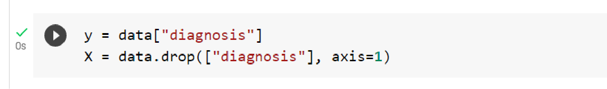

IN THIS PROJECT, WE WILL SEE HOW TO TRAIN A LOGISTIC REGRESSION MODEL. THIS IS INTENDED AS AN INTRODUCTION TO LOGISTIC REGRESSION. HOWEVER, WE WILL NOT GO THROUGH THE MATHEMATICAL INTUITION OF THE MODEL.
We will be working with the Breast Cancer dataset, which contains some very detailed measurements of cells. Along with each observation of measurements, we have the diagnosis of the cell (malignant or not). Our goal is to train a model that will be able to predict whether or not a given cell is malignant given only its measurements.
IMPORT THE DATA


CLEAN THE DATA BY USING A HEATMAP
LOGISTIC REGRESSION PREPROCESSING
NORMALIZE THE DATA
EVALUATE THE MODEL
SCENARIOS WHERE LOGISTIC REGRESSION CAN BE APPLIED AND WHERE OUR IMPLEMENTATION COULD BE USEFUL:
- DISEASE DIAGNOSIS - CAN BE USED TO PREDICT THE LIKELIHOOD OF A PATIENT HAVING A DISEASE BASED ON THEIR MEDICAL HISTORY AND OTHER RELEVANT FACTORS.
- CREDIT SCORING - CAN BE USED TO PREDICT WHETHER A CUSTOMER IS LIKELY TO DEFAULT ON A LOAN BASED ON THEIR FINANCIAL HISTORY AND OTHER RELEVANT FACTORS.
- CUSTOMER SEGMENTATION - CAN BE USED TO PREDICT WHETHER A CUSTOMER IS LIKELY TO BUY A PRODUCT BASED ON THEIR DEMOGRAPHIC AND BEHAVIORAL CHARACTERISTICS, AND CAN BE USEFUL IN MARKETING AND CUSTOMER RELATIONSHIP MANAGEMENT.